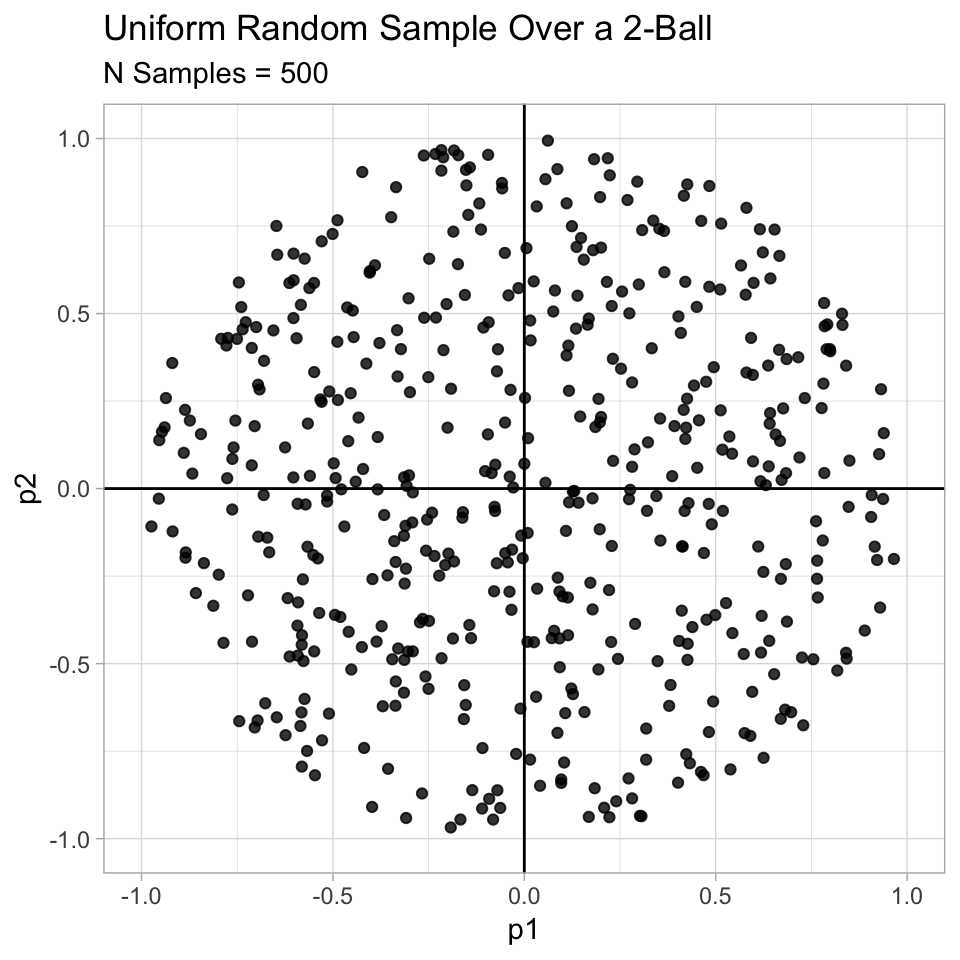
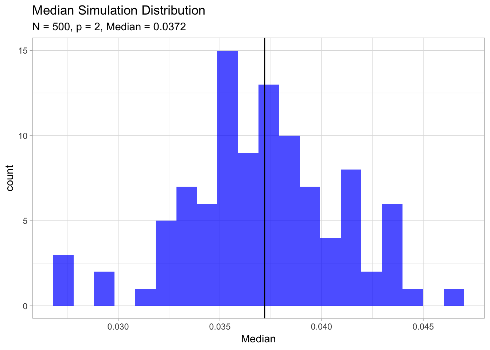
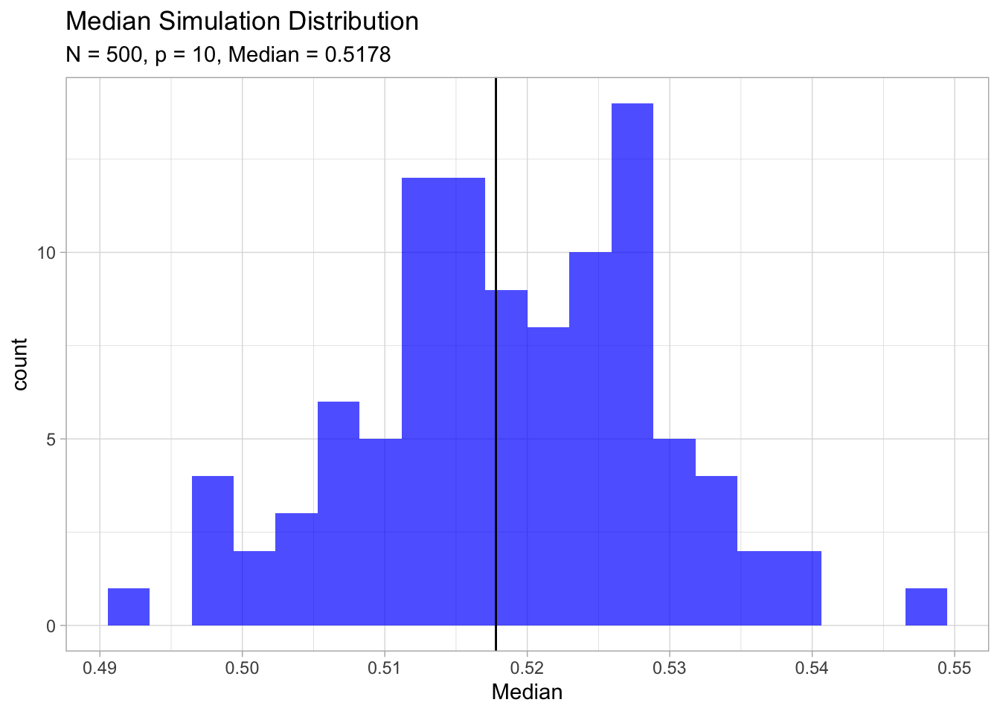
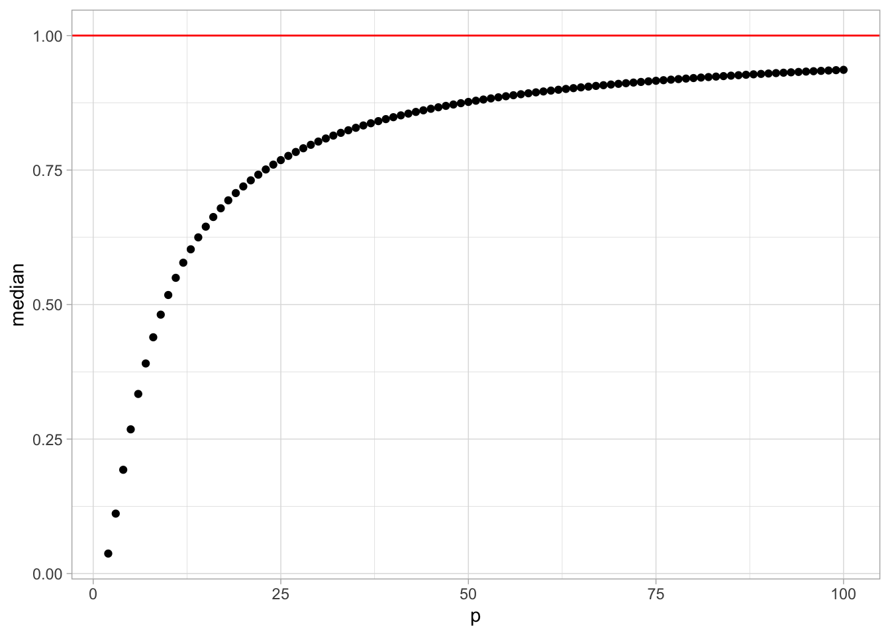

I continue exploring the curse of dimensionality. Following the analysis form Part I., I want to discuss another consequence of sparse sampling in high dimensions: sample points are close to an edge of the sample. This post is based on The Elements of Statistical Learning, Section 2.5, which I encourage to read!
Uniform Sampling
Consider \(N\) data points uniformly distributed in a \(p\)-dimensional unit ball centered at the origin. Suppose we consider a nearest-neighbor estimate at the origin. The median distance from the origin to the closest data point is given by the expression \[ d(p,N) = \left(1-\frac{1}{2}^{1/N}\right)^{1/p}. \]
Proof (Exercise 2.3):
Let \(X\) be the random variable \[ X = \min_{i \in \{1, 2, \cdots, N\}}||z_i||_{2} \] where the \(z_i\) are uniformly distributed in a \(p\)-dimensional unit ball centered at the origin. Here \(||\cdot||_{2}\) denotes the Euclidean norm.
We want to find \(\alpha\in[0,1]\) such that (this is the definition of the median) \[ P(X\geq \alpha) = \frac{1}{2}. \] First, as the samples are independent we have \[ P(X \geq \alpha) = \prod_{i=1}^N P(z_i \geq \alpha). \] As the points are uniformly distrributed over the \(p\)-ball, the key observation is that \[ P(z_i < \alpha) = \frac{vol (B^p_\alpha(0))}{vol (B^p_1(0))}, \] where \(vol (B^p_\alpha(0)) \propto \alpha^p\) denotes the volume of the \(p\)-dimensional ball with radius \(\alpha\) centered at the origin. Therefore, \[ P(z_i \geq \alpha) = 1- \alpha^p. \] All together, \[ P(X\geq \alpha) = (1 - \alpha^p)^N. \] Finally, we solve for \(\alpha\) in the equation \[ (1 - \alpha^p)^N = \frac{1}{2}, \] to get the desired result.
Simulation
Now we code a simulation to ilustrate this result.
We prepare the notebook:
library(glue)
library(magrittr)
library(tidyverse)
# Allow paraller computations.
library(foreach)
library(doMC)
registerDoMC(cores=8)First, lets us write the function for the median derived above.
d <- function(N, p) {
(1 - (1/2)^(1/N))^(1/p)
}We want to define a simulation function. To begin, we first need to generate uniform random samples over a \(p\)-dimensional ball.
SampleUniformBall <- function(N, p) {
#' Generate uniform samples over a p-ball.
#'
#'@param N number of points.
#'@param p dimension.
#'@return vector of samples.
# Generate direction (angle).
a <- rnorm(n = p, mean = 0, sd = 1)
# Generate radius.
r <- runif(n = 1, min = 0, max = 1)^(1/p)
# Compute the product.
s <- (a/norm(x = a, type = '2'))*r
return(s)
}Let us visualize and example for \(p = 2\).
N <- 500
1:N %>%
map(.f = ~ SampleUniformBall(N = 100, p = 2)) %>%
do.call(what = rbind) %>%
as_tibble %>%
ggplot() +
theme_light() +
geom_point(mapping = aes(x = V1, y = V2),
color = 'black',
alpha = 0.8) +
geom_vline(xintercept = 0) +
geom_hline(yintercept = 0) +
xlim(c(-1, 1)) +
ylim(c(-1, 1)) +
xlab(label = 'p1') +
ylab(label = 'p2') +
ggtitle(label = 'Uniform Random Sample Over a 2-Ball',
subtitle = glue('N Samples = {N}'))
Next we write the simulation function.
RunSimulation <- function(N, p, n0, n1) {
#' Generate median samples.
#'
#'@param N number of points.
#'@param p dimension.
#'@param n0 number of times to sample the N points.
#'@param n1 number of times to run the simulation.
#'@return vector median samples.
median.samples <- foreach(combination = 1:n1, .combine = rbind) %dopar% {
distances.to.origin <- foreach(combination = 1:n0, .combine = rbind) %dopar% {
# Sample N points.
samples <- 1:N %>% map(.f = ~ SampleUniformBall(N = N, p = p))
# Compute distance to the origin.
distance.to.origin <- samples %>%
map_dbl(.f = ~ norm(.x, type = '2')) %>%
min
}
# Compute the median.
distances.to.origin %>% median
}
median.samples %<>% as.vector
return(median.samples)
}Now we run the simulation for various values pf \(p\).
- \(p=2\)
N <- 500
p <- 2
median.samples <- RunSimulation(N = N,
p = p,
n0 = 50,
n1 = 100)
analytical.median <- d(N = N, p = p) %>% round(digits = 4)
median.samples %>%
as_tibble() %>%
ggplot() +
theme_light() +
geom_histogram(mapping = aes(x = value),
fill = 'blue',
alpha = 0.7,
bins = 20) +
geom_vline(xintercept = analytical.median) +
xlab(label = 'Median') +
ggtitle(label = 'Median Simulation Distribution',
subtitle = glue('N = {N}, p = {p}, Median = {analytical.median}')) 
- \(p=10\)
N <- 500
p <- 10
median.samples <- RunSimulation(N = N,
p = p,
n0 = 50,
n1 = 100)
analytical.median <- d(N = N, p = p) %>% round(digits = 4)
median.samples %>%
as_tibble() %>%
ggplot() +
theme_light() +
geom_histogram(mapping = aes(x = value),
fill = 'blue',
alpha = 0.7,
bins = 20) +
geom_vline(xintercept = analytical.median) +
xlab(label = 'Median') +
ggtitle(label = 'Median Simulation Distribution',
subtitle = glue('N = {N}, p = {p}, Median = {analytical.median}')) 
For \(N = 500\), \(p = 10\) , \(d(p,N) ≈ 0.52\), more than halfway to the boundary. Hence most data points are closer to the boundary of the sample space than to any other data point. The reason that this presents a problem is that prediction is much more difficult near the edges of the training sample. One must extrapolate from neighboring sample points rather than interpolate between them. (The Elements of Statistical Learning, Section 2.5).
Finally, let us plot the median vs dimension.
2:100 %>%
map_dbl(.f = ~ d(N = 500, p = .x)) %>%
as_tibble %>%
rename(median = value) %>%
mutate(p = 2:100) %>%
ggplot() +
theme_light() +
geom_point(mapping = aes(x = p, y = median)) +
geom_hline(yintercept = 1, color = 'red')
Spherical Multinormal Sampling (Exercise 2.4):
The edge effect problem discussed above is not peculiar to uniform sampling from bounded domains. Consider inputs drawn from a spherical multinormal distribution \(X ∼ N(0,I_p)\). The squared distance from any sample point to the origin has a \(χ^2_p\) distribution with mean \(p\). Consider a prediction point \(x_0\) drawn from this distribution, and let \(a = x_0/||x_0||\) be an associated unit vector. Let \(z_i = a^T x_i\) be the projection of each of the training points on this direction.
Show that the \(z_i\) are distributed \(N(0,1)\) with expected squared distance from the origin \(1\), while the target point has expected squared distance \(p\) from the origin.
Proof:
The \(z_i\) are normal being a linear combination of normal random variables. The expected value of \(z_i\) is \[ E(z_i) = E(a^T x_i) = a^T E(x_i) = 0. \] The variance is \[ Var(z_i) = Var(a^T x_i) = Var\left(\sum_{k=1}^N a_k x_{ik}\right) = \sum_{k=1}^N a^2_k Var(x_{ik}) = ||a||_{2} = 1. \] The expected squared distance from the origin of each \(z_i\) is \(E(z_i^2) = 1\) because \(z_i^2 ∼ \chi_1^2\).
Hence for \(p = 10\), a randomly drawn test point is about 3.1 standard deviations from the origin, while all the training points are on average one standard deviation along direction a. So most prediction points see themselves as lying on the edge of the training set.